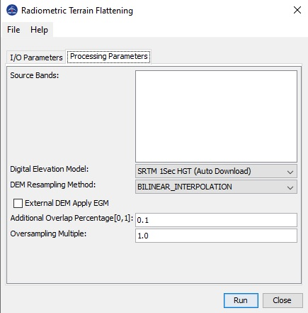

| Terrain Flattening |
|
simulatedImage (unit Ratio), the
simulated illuminated area Aγ,T divided by the reference area Aβ. The output
is β0 divided by this ratio. Multitemporal Compositing needs this band.nodataValueAtSea, default on): pixels where the DEM has
no data (often the sea) become no-data. When off, they are processed at the EGM96 geoid height.applyAPDCorrection, default off) is available only in
GPT and graphs; it is not in the dialog.Note: External DEM Apply EGM is off by default here but on by default in Range-Doppler Terrain Correction. When you use the same external geoid-height DEM in both, select it in both.

GPT operator: Terrain-Flattening. Generated from the operator source; parameter names are those used in GPT and graph XML.
| Parameter | Type | Default | Allowed values | Unit | Description |
|---|---|---|---|---|---|
sourceBands | String[] | The list of source bands. | |||
demName | String | Copernicus 30m Global DEM | The digital elevation model. | ||
demResamplingMethod | String | BILINEAR_INTERPOLATION | DEM Resampling Method | ||
externalDEMFile | File | External DEM | |||
externalDEMNoDataValue | double | 0 | DEM No Data Value | ||
externalDEMApplyEGM | Boolean | false | External DEM Apply EGM | ||
outputSimulatedImage | Boolean | false | Output Simulated Image | ||
outputSigma0 | Boolean | false | Output Terrain Flattened Sigma0 | ||
nodataValueAtSea | boolean | true | Mask the sea with no data value (faster) | ||
additionalOverlap | Double | 0.1 | [0, 1] | The additional overlap percentage | |
oversamplingMultiple | Double | 1.0 | [1, 4] | The oversampling factor | |
applyAPDCorrection | boolean | false | Correct for tropospheric path delay (~3 m range improvement) using a standard atmosphere model |